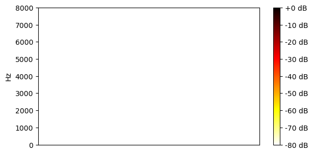

Librivox+Freesound test set
| Mixture |
|
||
|---|---|---|---|
| Ground-truth sources |
SI-SNR = 3.90 dB |
SI-SNR = -3.79 dB |

SI-SNR = -79.65 dB |
| Method | Separated source 0 | Separated source 1 | Separated source 2 |
| supervised |
SI-SNR = 16.92 dB |
SI-SNR = 12.96 dB |

SI-SNR = 0.00 dB |
| unsupervised |
SI-SNR = 15.29 dB |
SI-SNR = -2.96 dB |
SI-SNR = -73.28 dB |
| Mixture |
|
||
|---|---|---|---|
| Ground-truth sources |
SI-SNR = -28.67 dB |
SI-SNR = 28.56 dB |

SI-SNR = -84.14 dB |
| Method | Separated source 0 | Separated source 1 | Separated source 2 |
| supervised |

SI-SNR = -0.92 dB |
SI-SNR = 31.12 dB |

SI-SNR = 0.00 dB |
| unsupervised |
SI-SNR = -4.10 dB |
SI-SNR = -21.51 dB |
SI-SNR = -84.16 dB |
| Mixture |
|
||
|---|---|---|---|
| Ground-truth sources |
SI-SNR = 7.05 dB |
SI-SNR = -7.18 dB |

SI-SNR = -82.61 dB |
| Method | Separated source 0 | Separated source 1 | Separated source 2 |
| supervised |
SI-SNR = 29.14 dB |
SI-SNR = 22.08 dB |

SI-SNR = 0.00 dB |
| unsupervised |
SI-SNR = 21.31 dB |
SI-SNR = -14.40 dB |
SI-SNR = -74.31 dB |